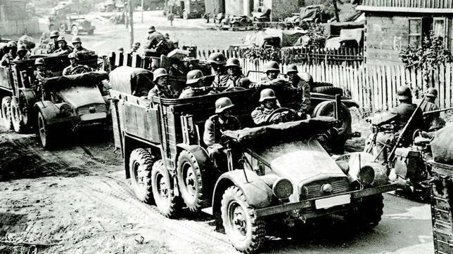
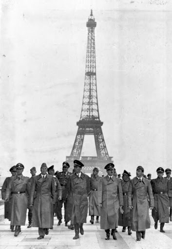
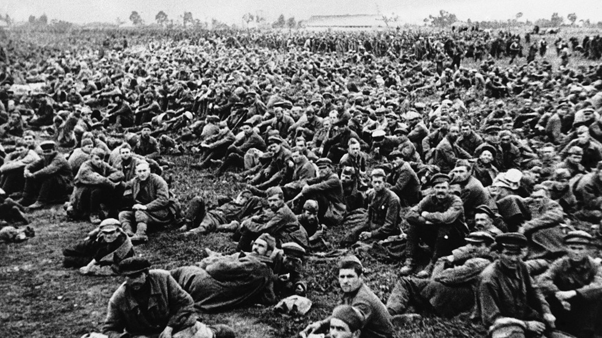
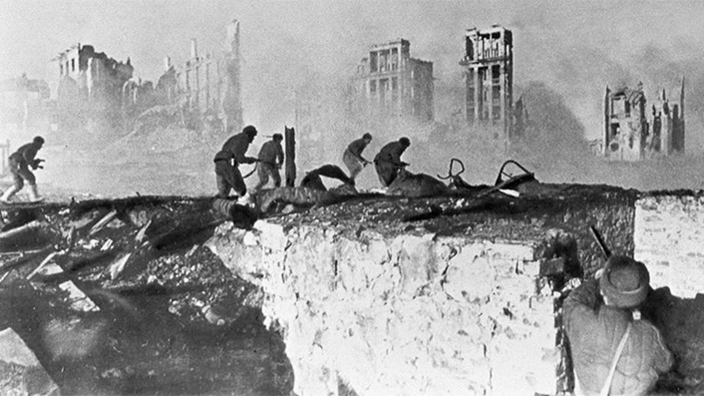
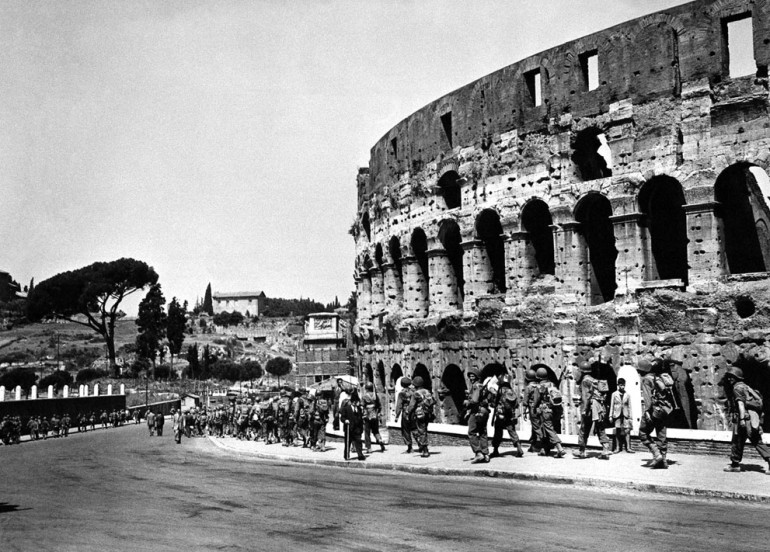
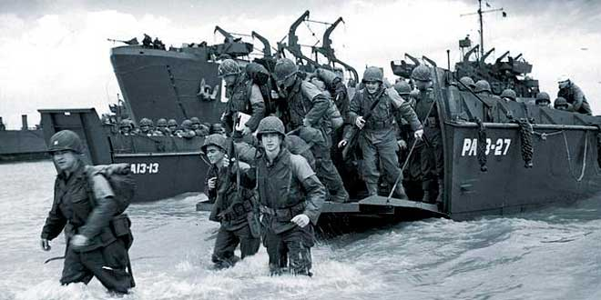

Invasión alemana de Polonia de 1939, Invasión soviética de Polonia de 1939
El 1 de septiembre de 1939, la Alemania nazi invade Polonia, su vecina oriental, iniciando una cruenta batalla por todo el país con el único fin de anexionarse parte del territorio polaco, debido a las acciones inhumanas cometidas por el ejército polaco y su gobierno a la población étnica alemana.[cita requerida] Por más de un mes las tropas hitlerianas (Wehrmacht) de la Alemania nazi atacaron desde el occidente ciudad por ciudad a Polonia. El ejército polaco no logró superar al ejército de Hitler y día a día iba sufriendo bajas y pérdidas considerables.
El 17 de septiembre, la Unión Soviética invade Polonia por la parte oriental de este país, tal como lo habían acordado los gobiernos de Hitler y Stalin en secreto. La entrada de los soviéticos aceleró la caída de Polonia y para el 6 de octubre de 1939 los polacos ya habían cedido ante el ataque alemán y soviético. Fue así como la mitad occidental quedó bajo el poder de Alemania y la mitad oriental bajo dominio de la URSS.
La invasión a Polonia fue un despiadado ataque que significó un duro golpe para los polacos, pues se vieron inmersos en masacres cruentas que destruyeron ciudades y mataron al 20% de la población hasta entonces.
El 27 de septiembre se alcanzó un acuerdo para un alto el fuego, vigente desde las 12:00 p. m.. Los combates se detuvieron y poco después la guarnición de Varsovia se rindió. Numerosas unidades que se negaron a abandonar las armas fueron visitadas por los generales de ambos bandos. El 29 de septiembre, la guarnición de la ciudad comenzó a esconder y/o destruir su armamento pesado, para evitar que fuese capturado. Parte de este material fue usado posteriormente durante el alzamiento de Varsovia.

Batalla de Francia
Luego de los ataques en los Países Bajos, Bélgica y Luxemburgo, los alemanes invadieron a uno de sus principales enemigos: Francia. La invasión alemana de Francia fue uno los momentos más importantes y claves de la guerra.
Alemania comenzó su invasión en la región de las Ardenas iniciando una ofensiva a cargo de Heinz Guderian por el Río Sena en dirección hacia la ciudad de Sédan comenzando así la Batalla de Sedán (1940), avanzado rápidamente hacia el occidente. El ejército de Hitler logró capturar sin mayores complicaciones, aplastando a gran parte del ejército francés. Sin embargo, cuando las Wehrmacht se encontraba a pocos kilómetros de Dunkerque, Hitler ordenó que se detuviera el avance. Esto hizo que soldados franceses y británicos quedaran rodeados y huyeran desde Dunkerque por el Canal de la Mancha (Operación Dinamo). Así, los alemanes fueron conquistando al territorio francés. Durante el mismo periodo, el Reino de Italia, la principal aliada de Alemania, declaró la guerra a Francia y la atacó desde el sur, haciendo que la captura de Francia avanzara rápidamente.
Después de siete semanas de batalla, Francia se da cuenta de que no puede contra las tropas alemanas, razón por la cual los franceses firman un armisticio con Alemania, en el cual los alemanes ocuparan la mitad norte del país, incluyendo la capital París, y en tanto, la mitad sur quedaría libre, con un gobierno títere de fuerte influencia alemana y nazi. Este gobierno fue llamado Francia de Vichy en honor a la nueva capital del mismo nombre. El Reino de Italia, por otro lado, ocupó una porción del sur de Francia. Esta batalla se llevó a cabo (realmente) el 13 de mayo de 1940.

Operación Barbarroja
El 22 de junio de 1941, Hitler con su ejército de la Alemania nazi, invaden la hasta entonces neutral Unión Soviética. Esta invasión fue una sorpresa mundial, ya que rompía con el Pacto de no-agresión entre alemanes y soviéticos, y traicionaba a Stalin, quien ya había posicionado tropas en la frontera con Alemania y había construido varias pistas de aterrizaje a lo largo de la misma.
Tomando esto como una amenaza a Europa y por ende, Alemania, Hitler ordena la Operación Barbarroja, como llamó a esta invasión. Ésta fue un duro golpe para los soviéticos, quienes no esperaban un ataque así. El avance alemán fue rápido en las primeras semanas y con sus grandes tácticas de ataques, los nazis dominaban día a día más territorio. En un mes, los alemanes habían logrado someter a los países bálticos (Estonia, Letonia y Lituania) y también Bielorrusia, además de enviar tanques a Leningrado y Ucrania para someterlas. Para septiembre, ya habían logrado cruzar el río Dniéper y capturado Kiev y Viazma, teniendo un avance aún más exitoso. Sin embargo, a medida que las tropas alemanas se adentraban en territorio soviético, los contraataques del ejército rojo de Stalin eran cada vez mayores.
Las primeras lluvias otoñales, retrasaron en gran manera el avance alemán, haciendo que los soviéticos se prepararan mejor para contraatacar. Los alemanes seguían avanzando, y ciudad por ciudad, tomaban parte de la URSS, pero los soviéticos, lejos de desistir, revocaban varias operaciones militares de Alemania. Para octubre, los alemanes habían llegado a Leningrado, haciendo un bloqueo de la ciudad con el fin de dominarla.

Batalla de Moscú
La batalla de Moscú (ruso: Битва за Москву, tr: Bitva za Moskvu; en alemán: Schlacht um Moskau) es el nombre dado por los historiadores soviéticos a dos periodos de lucha estratégicamente significativos en un corredor de 600 km del frente oriental durante la Segunda Guerra Mundial. Estos episodios tuvieron lugar entre el 2 de octubre de 1941 y el 7 de enero de 1942. El esfuerzo defensivo soviético había frustrado la estrategia de Hitler de tomar la ciudad de Moscú, capital de la Unión de Repúblicas Socialistas Soviéticas (URSS) y su ciudad más grande, que era considerada el primer objetivo militar y político de las fuerzas del eje para la invasión de la Unión Soviética.
La estrategia ofensiva alemana denominada Operación Tifón consistía en el empleo de dos ejércitos en un movimiento de pinza. Un ejército, formado por los 3.er y 4.º Ejércitos Panzer atacaría al norte de Moscú contra el frente de Kalinin, cortando simultáneamente la vía Moscú-Leningrado. El otro ejército se dirigiría al sur del óblast de Moscú hacia el frente occidental soviético, al sur de Tula con el 2.º Ejército Panzer, mientras que el 4.º Ejército avanzaba directamente hacia Moscú desde el oeste. Una operación adicional con el nombre en clave Operación Wotan se había incluido en la fase final de la ofensiva alemana.
Batalla de Stalingrado
La batalla de Stalingrado fue un conflicto bélico entre el Ejército Rojo de la Unión Soviética y la Wehrmacht de la Alemania nazi y sus aliados del Eje por el control de la ciudad soviética de Stalingrado, actual Volgogrado, entre el 23 de agosto de 1942 y el 2 de febrero de 1943. La batalla se desarrolló en el transcurso de la invasión alemana de la Unión Soviética, en el marco de la Segunda Guerra Mundial. Con bajas estimadas en más de dos millones de personas entre soldados de ambos bandos y civiles soviéticos, la batalla de Stalingrado es considerada la más sangrienta de la historia de la humanidad. La grave derrota de la Alemania nazi y sus aliados en esta ciudad significó un punto clave y de severa inflexión en los resultados finales de la guerra; representando el principio del fin del nazismo en Europa,19pues la Wehrmacht nunca recuperaría su capacidad ofensiva ni obtendría más victorias estratégicas en el Frente Oriental.

Batalla de Italia
El 10 de julio de 1943, las tropas aliadas, en especial británicas y estadounidenses invaden el Reino de Italia, que era una de las principales potencias del Eje. La invasión inició en la isla de Sicilia (Operación Husky), que los aliados ocuparon por más de un mes. Debido a la invasión, Mussolini es arrestado por el mismo rey de Italia terminando con la Italia fascista. Luego, los aliados entran a la península itálica a través del estrecho de Mesina, avanzando hacia el norte sin mucha resistencia. El nuevo gobierno italiano, comandado por Badoglio, firma la rendición el 8 de septiembre e intenta ocultarle esto a Alemania, para que Hitler no sospechara de la traición de su aliado.
El 9 de septiembre, otro desembarco aliado ocurre en Salerno y se imponen en el territorio. Sin embargo, Hitler se entera de la ocupación en Italia y ordena invadir dicho país, estableciéndose en el norte la República Social Italiana, dominada por Mussolini y en el sur el Reino del Sur, que tiene dominio aliado. Los aliados y los alemanes comenzaron a luchar en Italia por el dominio de ésta. Alemania logra hacer una línea de defensa conocida como Línea Gustav con la cual piensa impedir la entrada de los aliados al norte de Italia. Se libraran una serie de cruenta batallas conocidas como Batalla de Montecassino, en la que finalmente los aliados entran a Roma, liberan a Italia del fascismo y los partisanos italianos ejecutan a Mussolini.

Batalla de Normandía y Liberación de Francia
La batalla de Normandía, llamada en clave Operación Overlord, fue la operación militar efectuada por los Aliados durante la Segunda Guerra Mundial que culminó con la liberación de los territorios de Europa occidental ocupados por la Alemania nazi. La operación dio comienzo el 6 de junio de 1944, más conocido como el Día D, con el desembarco de Normandía; el conjunto de las operaciones navales recibió el nombre clave de Operación Neptuno. Un asalto aerotransportado llevado a cabo por mil doscientas aeronaves precedió al desembarco anfibio, que involucró a cinco mil barcos. El 6 de junio, ciento sesenta mil soldados cruzaron el canal de la Mancha de Inglaterra a Francia y hacia finales de agosto las tropas aliadas en suelo francés eran más de tres millones.
La liberación de París durante la Segunda Guerra Mundial consistió en la entrada de los Aliados en la capital francesa en agosto de 1944. La batalla comenzó con una sublevación de la Resistencia francesa en la ciudad, a la que poco después se unieron elementos de la 2.ª División Blindada francesa (encuadrada en el Tercer Ejército estadounidense y conocida como División Leclerc) y, en mucha menor medida, de la 4.ª División de Infantería estadounidense.
En esta batalla participaron activamente españoles republicanos exiliados y sobre todo anarquistas, tanto en las filas de la Resistencia como entre las tropas de la 2.ª División Blindada francesa, en papeles destacados, hasta el punto de que las primeras unidades militares aliadas que entraron en París estaban compuestas por antiguos miembros del Ejército Popular Republicano. Se hallaba al frente de las mismas Amado Granell, quien por entonces era teniente del Ejército francés, siendo igualmente antiguo mayor de Milicias del Ejército Popular Republicano, en el que había mandado una Brigada Mixta.

Batalla de Berlín
Una de las últimas y más decisivas contiendas de la Segunda Guerra Mundial fue sin duda la Batalla de Berlín.
Esta batalla inició el 16 de abril de 1945, cuando las tropas de la Unión Soviética entran en Berlín y comienzan a avanzar y destruir la ciudad. La Alemania nazi se encontraba en uno de sus peores momentos, producto de los horripilantes bombardeos que había sufrido por parte de Estados Unidos y el Reino Unido, así que una lucha más los haría colapsar. Hitler ordenó que sus tropas defendieran con todo a la ciudad, pero los ataques soviéticos eran demasiados y su avance en Berlín era muy rápido. El ejército rojo de Stalin luchaba casa por casa y cada vez tenía más terreno. Además, la artillería pesada de los soviéticos sumado a los ataques de los mismos, hacían que Berlín se deteriora y quedara en ruinas. Los edificios y lugares públicos eran destruidos y la mayoría de la ciudad quedó devastada.
Finalmente, los soviéticos lograron entrar en el Edificio del Reichstag, provocando el pánico en los alemanes. Además, el 30 de abril, Hitler se suicida y deja al Tercer Reich sin un líder. Esto provoca que el 7 de mayo de 1945, Alemania se rinda ante los soviéticos y posteriormente, sea ocupada por las fuerzas aliadas de Estados Unidos, Reino Unido de Gran Bretaña e Irlanda del Norte, Francia y la ya adentrada Unión Soviética.